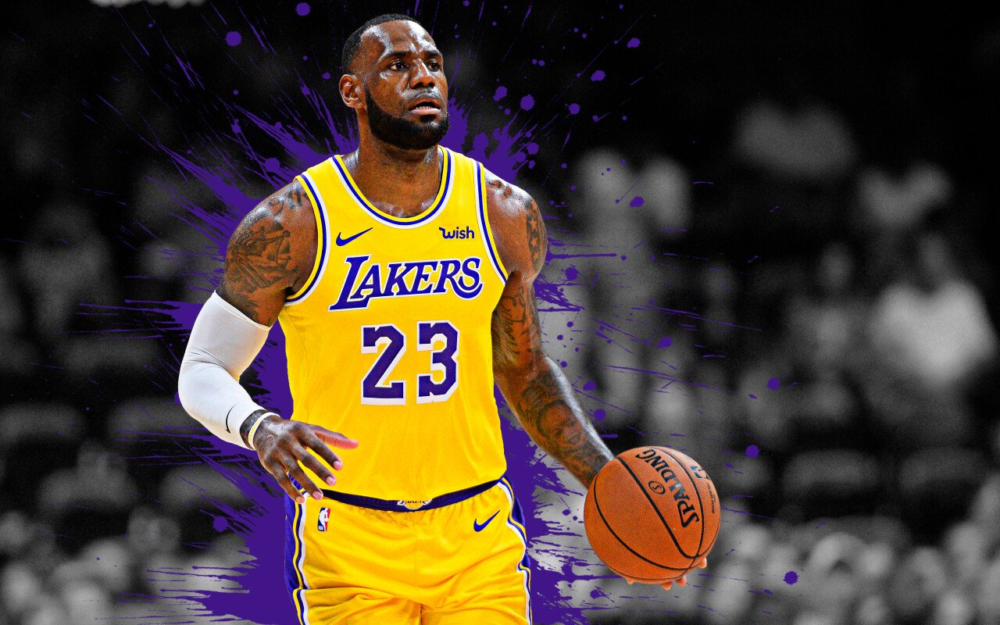

Los 3 Iconos de la NBA
Kobe Bryant

Por muchos considerado el Mejor jugadores de la Historia de la NBA. Fue baloncestista estadounidense que jugaba en la posicion de escolta. Disputo veinte temporadas en la NBA, todas ellas en Los Angeles Lakers. Hijo del exjugador de baloncesto Joe Bryant, este considerado como uno de los mejores baloncestistas de todos los tiempos.
Gano cinco titulos en su extensa trayectoria con Los Angeles Lakers.
Michael Jordan
Michael Jeffrey Jordan es un exjugador de baloncesto estadounidense. Con 1,98 metros de altura, jugaba en la posicion de escolta. Es considerado por la mayoría de aficionados y especialistas como el mejor jugador de baloncesto de todos los tiempos.
Gano seis titulos de la NBA (1991, 1992, 1993, 1996, 1997 y 1998), dominando con puño de hierro la liga durante toda una decada.
Lebron James
LeBron Raymone James Sr. es un jugador de baloncesto estadounidense que actualmente pertenece a la plantilla de Los Angeles Lakers de la NBA. Con 2,06 metros de estatura, su posicion es la de alero, pero su talento, versatilidad y poderio fisico le permiten jugar tanto de base como de ala-pivot.
LeBron James, máximo anotador en la historia de la liga, ha ganado cuatro campeonatos de la NBA, dos con Miami Heat (2012, 2013), uno con Cleveland Cavaliers (2016) y el último con Los Angeles Lakers (2020).